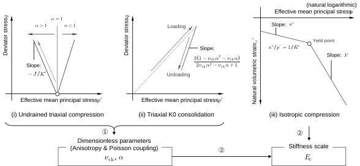
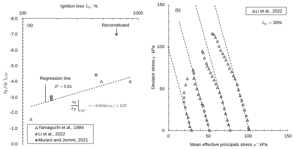
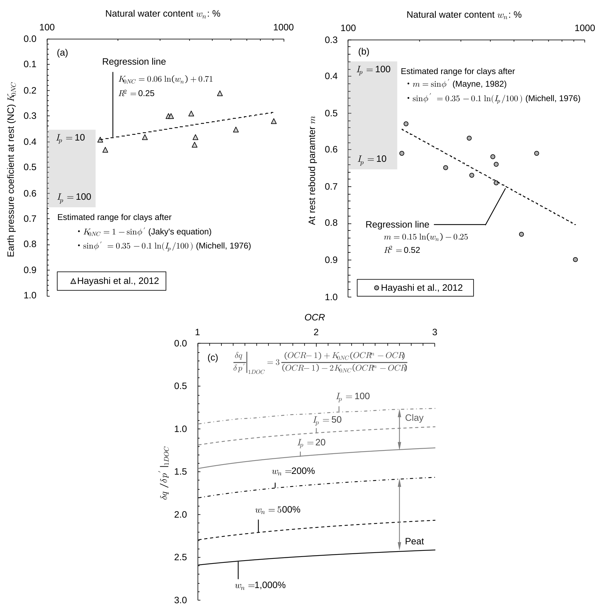

Ch3.1.2
Calibration of the anisotropic parameters from triaxial data
The three parameters $(E_v,\nu_{vh},\alpha)$ can be identified from the following three test results obtained from conventional triaxial set-up. The procedure, summarised in Fig. 3.1.2, is detailed below:

Effective stress path within conventional undrained triaxial compression
Imposing the undrained condition (i.e., $\delta\varepsilon_v^e=0$) into Eq. (3.1.10) gives:
Thus, the initial ESP slope in UTC $\left.\delta q/\delta p'\right|_{\mathrm{UTC}}$ depends only on the two parameters $(\nu_{vh},\alpha)$.
Effective stress path within the overconsolidation range under one-dimensional compression
With the 1-D compression condition (i.e., $\delta\varepsilon_v^e=\delta\varepsilon_a^e$ and $\delta\varepsilon_d^e=\frac{2}{3}\delta\varepsilon_a^e$), Eq. () yields again a function only of $(\nu_{vh},\alpha)$:
From the two measured slopes in (i)–(ii), the dimensionless parameters $(\nu_{vh},\alpha)$ are obtained by solving Eqs. (3.1.20) and (3.1.21) for the two unknowns.
Volumetric stress-strain curve within the OC range from the isotropic compression test
The volumetric response is typically described as:
Here, $\kappa^*$ is the tangential (or secant) slope of the unloading-reloading line under isotropic compression. With $(\nu_{vh},\alpha)$ now known, the stiffness scale is treated as a state-dependent quantity (i.e., a function of effective principal stress):
Other datasets may be chosen; however, this procedure is justified because the selected tests primarily capture three essential components of soil behaviour: (i) short-term shear response, (ii) long(mid)-term settlement, and (iii) state dependence (i.e., confining pressure), respectively.
The initial ESP slope in UTC $\left.\delta q/\delta p'\right|_{\mathrm{UTC}}$ for peats reported in previous studies (Yamaguchi et al., 1984; Muraro and Jommi, 2021; Li et al., 2022) are summarised as a function of water content (Fig. 3.1.3 (a)). The test data from Li et al. (2022) indicate that the stress dependence of anisotropy in peats is small up to about 100 kPa (Fig. 3.1.3 (b)).

The ESP slope within the OC range under 1-D compression $\left.\delta q/\delta p'\right|_{\mathrm{1DOC}}$ is here described by the well-known empirical relationship:
Here, $K_{0\mathrm{OC}}$ is the coefficient of earth pressure at rest during unloading, $K_{0\mathrm{NC}}$ that in the normal compression range, OCR the overconsolidation ratio, and $m$ a material parameter. With the relationship, $\left.\delta q/\delta p'\right|_{\mathrm{1DOC}}$ yields:
The parameters $(K_{0\mathrm{NC}},m)$ obtained from a previous study on peats (Hayashi et al., 2012) are summarised in Fig. 3.1.4 (a) and Fig. 3.1.4 (b). Using these values, Fig. 3.1.4 (c) presents the values of ESP slope estimated from Eq. (3.1.25), as a function of OCR and natural water content.
| Assumed natural water content $w$ (%) | $\left.\delta q/\delta p'\right|_{\mathrm{UTC}}$ | $\left.\delta q/\delta p'\right|_{\mathrm{1DOC}}$ | $\alpha^2=E_h/E_v$ | $\nu_{vh}$ |
|---|---|---|---|---|
| 200 | −2.8 | 1.35 | 3.1 | 0.08 |
| 500 | −3.8 | 1.7 | 2.5 | 0.07 |
| 1,000 | −4.5 | 2.5 | 2.4 | 0.02 |

The two anisotropy parameters $(\nu_{vh},\alpha)$ consistent with these results are summarised in Table 3.1.1. Rather than solving the simultaneous Eqs. (3.1.20) and (3.1.21) exactly, they were obtained by a simple trial-and-error calibration. As practical cues: a smaller absolute value of $\left.\delta q/\delta p'\right|_{\mathrm{UTC}}$ implies a larger $\alpha^2$; a larger $\left.\delta q/\delta p'\right|_{\mathrm{1DOC}}$ implies a smaller $\nu_{vh}$.
Meanwhile, these two parameters may merely add the degrees of freedom in fitting. To claim a measurement of anisotropy, it is preferable to complement the calibration with small-strain measurements as described by previous studies such as Nishimura (2014). The remaining parameter $E_v$ depends only on $\kappa^*$ apart from the state variable $p'$. There are two conventions to determine $\kappa^*$: 1) “Linear” $\kappa^*$ model (e.g., Cam-Clay), where the secant value of URL slope is chosen for $\kappa^*$, typically approximated as $\kappa^*=\kappa^*_{sec}\simeq0.1\sim0.2\lambda^*$; and 2) Hysteretic model (e.g., MIT-E3 model by Whittle and Kavvadas, 1994). The latter will be described in the following section.